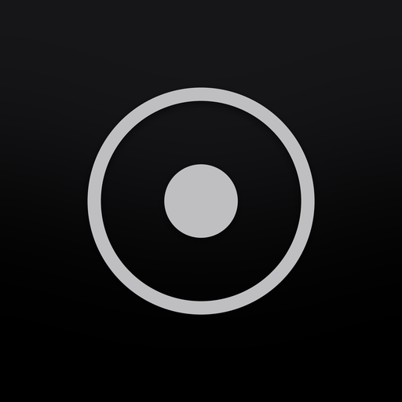
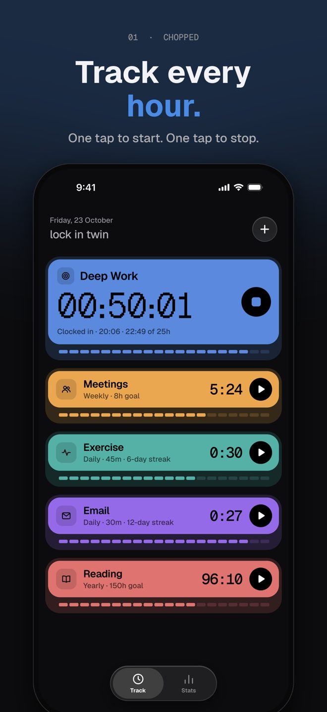
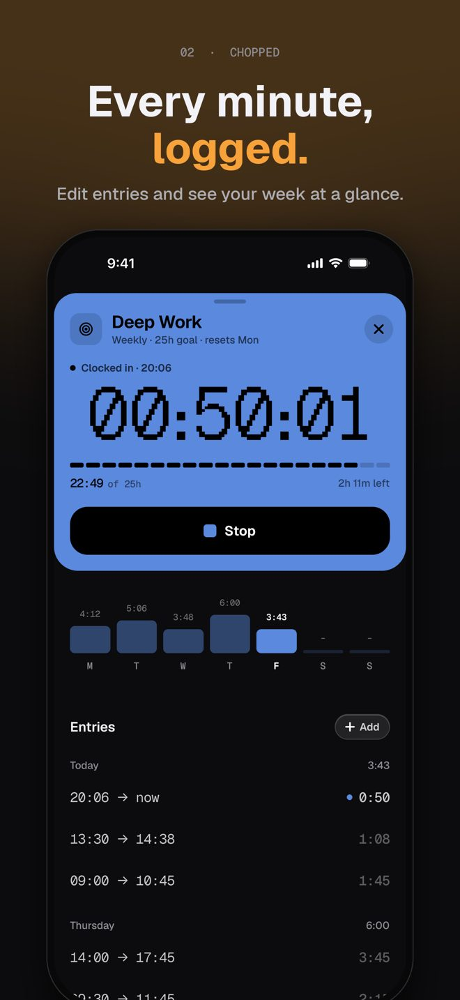
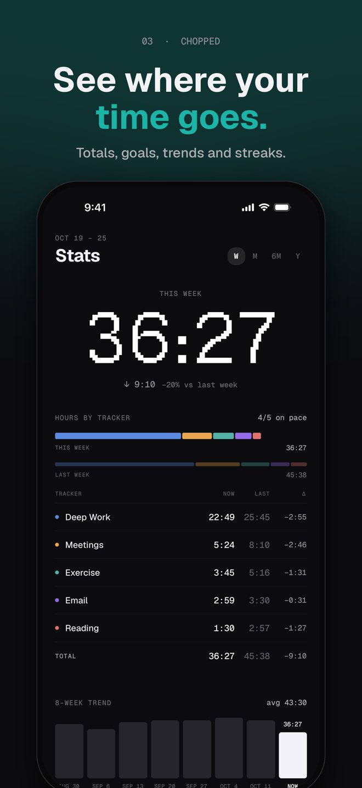
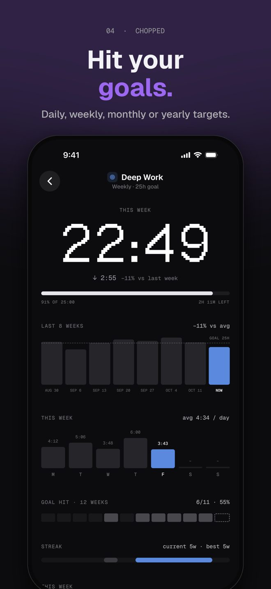
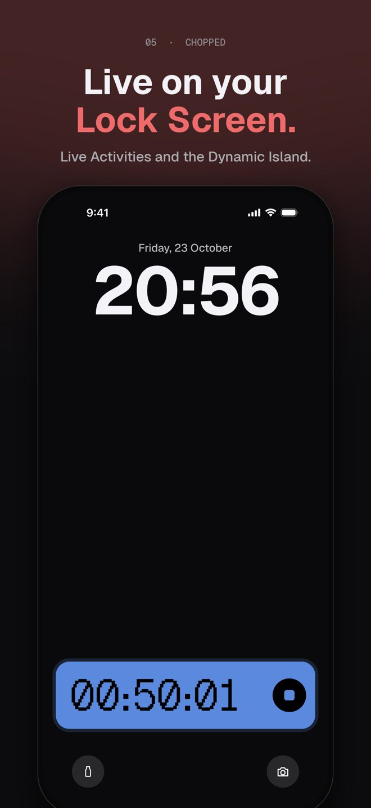
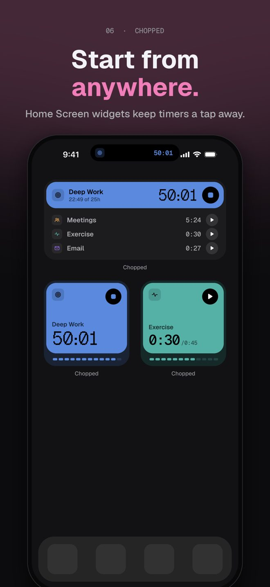

Chopped: Time Tracker
Lock in. Track every minute.
00:50:01
One tap to start, one tap to stop. Track deep work, meetings, workouts and more, set goals, and watch your time live on the Lock Screen and Dynamic Island.
Download on the App Store





Features
Chopped is a simple, private time tracker for people who want to lock in.
Make a tracker for anything — deep work, meetings, exercise, email, reading — give it a color and an icon, and tap play. Tap stop when you're done. That's it.
Track with one tap
- Start and stop timers right from the Home screen
- Big, bold live timer you can read at a glance
- Edit or add entries anytime, and swipe to delete a tracker
Set goals
- Give each tracker a daily, weekly, monthly or yearly goal
- Segment bars fill in as you go, so you always know how close you are
See where your time goes
- Weekly totals and a breakdown by tracker
- 8-week trends, goal progress, streaks and a heatmap of your best days
- Per-tracker stats with daily averages and comparisons to last week
Always within reach
- Live Activities on the Lock Screen and in the Dynamic Island
- Home Screen widgets to start and stop timers without opening the app
- Control Center controls (iOS 18 and later)
Private by design
Your data stays on your iPhone.
Chopped doesn't collect anything.
No accountNo sign-upNo adsNo tracking